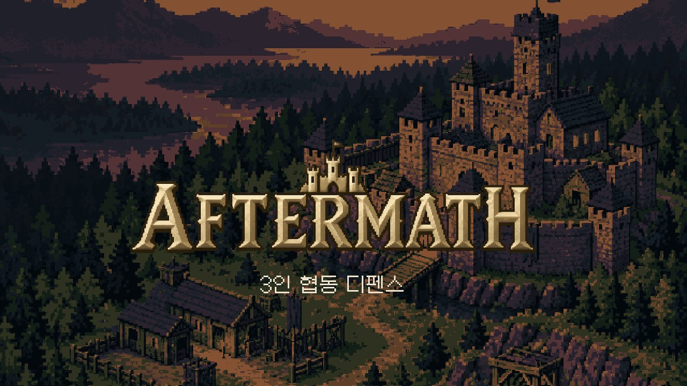
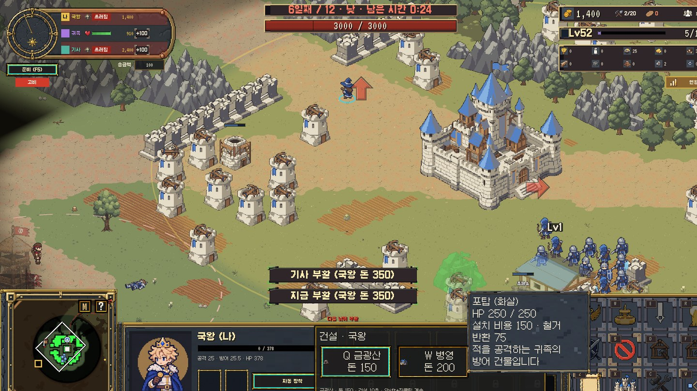
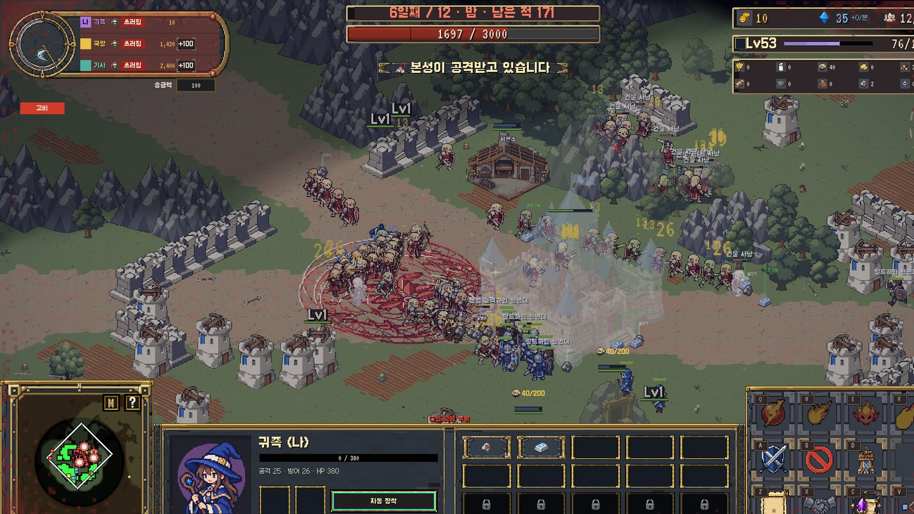
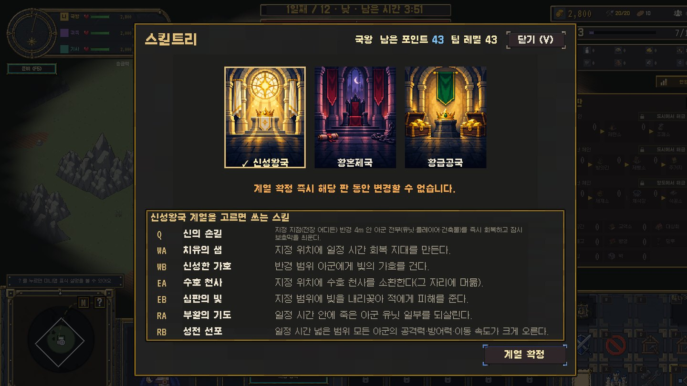
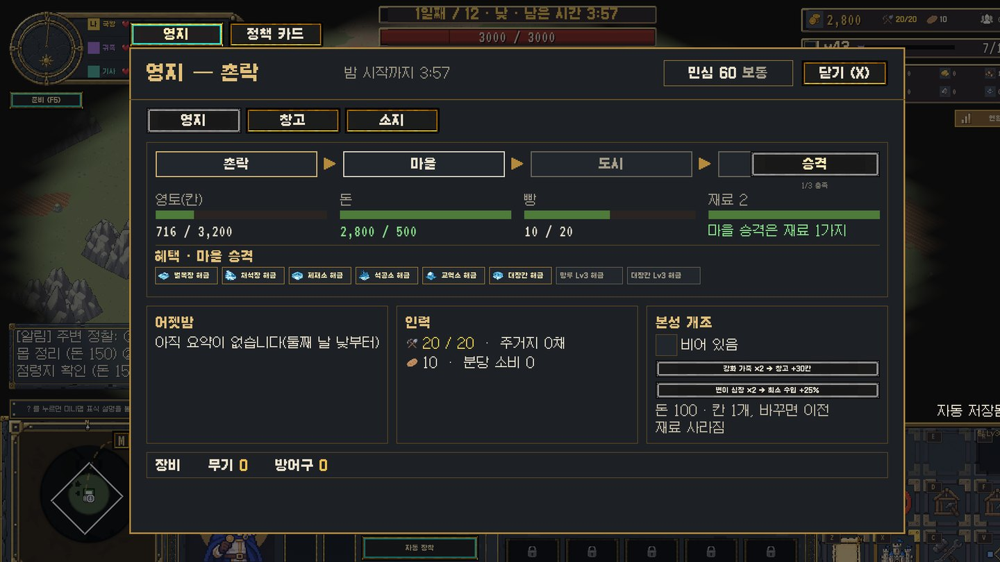
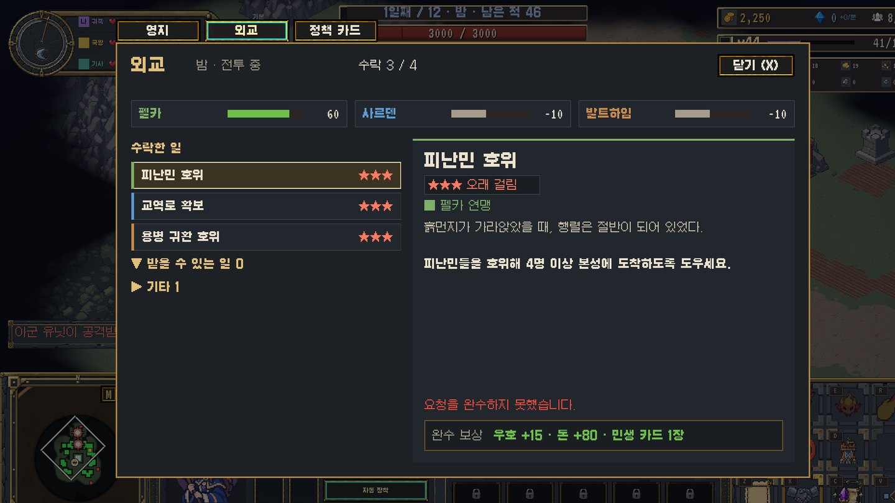

3인 온라인 협동 타워 디펜스 (2026.09 ~ 12). 게임 컨셉 원안을 냈다 (컨셉 원페이저, 원안 김준현, 편집 팀원).
| 기간 | 2026.09 ~ 12 (12.04 발표회) | 역할 | 컨셉 원안, 콘텐츠 기획 (5인 팀) |
| 장르 | 3인 온라인 협동 타워 디펜스 (PC) | 사용 툴 | Unity, Jira, Confluence, Git, Claude |






타이틀, 낮 준비, 밤 전투, 스킬트리, 국왕 영지, 귀족 외교. 개발 빌드 화면이며 아트와 구현은 팀 공동 작업이다.
| 콘텐츠 | 한 일 | 숫자 |
|---|---|---|
| 스킬트리 | 스킬 상세 기획, 데이터테이블을 구현값에 맞춰 정리, 단일 대상 스킬을 범위형으로 보완 | 데이터테이블 v7, 담당별 요청 11건 |
| 튜토리얼 | 단계 흐름 기획과 화면 와이어프레임, 이후 캠페인 방식으로 전환 | 7단계 |
| 국왕, 기사, 귀족 추가 콘텐츠 | 직업별 세부기획서, 데이터테이블, UI 요구서 | 국왕 데이터테이블 v8 |
| 장비 시스템 | 슬롯, 일반 장비와 특수 장비, 부여 규칙, 아트 요청 | 일반 6종, 특수 24종, 아이콘 36종 |
| 국왕 자동화 | 영지 단계와 생산 체인 자동화, 가공 대기열 조정 | 영지 4단계, 대기열 5칸에서 10칸 |
| 귀족 정책 카드 | 낮 이벤트를 완수해 카드를 받고 발동하는 영지 안 콘텐츠 (아래 사례 1) | 카드 21장, 계열 3개 |
| 프롤로그 캠페인 | 6장 전체 흐름과 장별 세부기획 (아래 사례 2) | 6장, 계산 58.4분 |
| 단계 | 내용 |
|---|---|
| 기획서 | 규칙, 예외, 수치의 의도를 먼저 쓰고 상세는 표로 |
| 데이터테이블 | 수치의 원본. 기획서보다 우선하도록 버전 관리 |
| 구현, UI, 아트 요청서 | 받는 사람별로 나눠 무엇을, 왜, 어떤 우선순위로 할지만 전달. 구현 방식은 담당이 결정 |
스킬 데이터테이블을 dev에 구현된 값과 맞춰 보니 액티브 스킬 63개가 전부 기본 쿨다운 18초였고, 랭크를 올려도 효과가 늘지 않게 랭크당 키 23개가 비어 있었습니다. 충돌 정리 시트로 근거를 남기고 담당별 요청 11건으로 나눠 전달했습니다.
11월 9일 회의에서 귀족이 영지를 지키지 않고 기사를 따라다닌다는 문제가 나왔습니다. 원인은 귀족이 영지 안에서 할 콘텐츠가 부족한 것으로 정리됐고, 영지 안에서 할 일을 만드는 정책 카드를 기획했습니다.
| 항목 | 규칙 |
|---|---|
| 하루 흐름 | 낮 시작에 이벤트가 동시에 뜸. 최대 4개 수락(취소 불가), 완수하면 그 계열 카드 2장 중 1장. 하루 최대 3장 발동 후 소멸, 보유 6장, 남은 카드는 이월 |
| 카드 | 21장, 계열 3개 (군사, 경제, 민생). 같은 계열 2장, 3장을 모으면 특수 효과와 세력 우호 +10 |
| 수락과 우호 | 수락하지 않은 이벤트는 벌 없음, 수락한 뒤 실패하면 우호 −10. 3일 연속 방치하면 경고 사절 |
| 전용 이벤트 | 하루 2개 (영지 안 1, 밖 1). 판정은 낮, 귀족은 돕는 역할 |
| 업그레이드 | 대사관 Lv3, Lv5에서 수락 수나 보유 수 중 하나를 고름. 하루 발동 3장은 늘지 않음 |
| 난이도 표시 | 별 1~3은 걸리는 시간, 칼은 전투, 왕관은 국왕 필요, 투구는 기사 필요. 이벤트마다 고정값 |
| 문서 | 받는 사람 | 내용 |
|---|---|---|
| 기획 초안 | 팀 전체 | 기획 의도, 기존 기능과의 관계, 흐름, 카드 목록, 민심 개편, 이벤트 목록 |
| 데이터테이블 v1 | 구현, 수치 | 상수, 카드 21장, 묶음 보너스, 민심, 이벤트, 이벤트 난이도, 업그레이드 |
| UI 요청서 | UI 기획 | 화면 요청 9건과 난이도 표시 레퍼런스. 새 아트 없이 기존 카드 형식 재사용 |
| 구현 요청서 | 구현 | 구현 요청 9건, 구현 쪽에 확인할 질문 5건 |
| 규칙 변경 요청 | 팀 전체 | 기존 규칙과 충돌하는 6건(R-65~R-70)을 현재 규칙, 변경 요청, 사유, 영향으로 정리 |
| 대사관 건물 삭제 제안 | 팀 전체 | 정책 카드가 대사관 역할을 대신하게 되어 건물 삭제를 제안, 합의 완료 |
10월 27일 회의에서 7단계 튜토리얼을 캠페인으로 바꾸기로 했습니다. 세 직업(국왕, 기사, 귀족)과 판 기능이 많아 한 번에 가르치면 놓치기 쉬워서, 장마다 기능을 하나씩 켜고 정해진 순서로 직업을 바꿔 가며 배우게 했습니다.
| 장 | 분 | 직업 전환 | 새로 가르치는 것 |
|---|---|---|---|
| 1 함락 | 9.2 | 1번 | 이동, 화면, 공격, Q, 직업 전환 |
| 2 피난처 | 11.8 | 4번 | 영지 창, 돈과 빵과 노동력 체인, 병영, 송금, 벽과 포탑 |
| 3 피난처의 밤 | 6.6 | 4번 | 낮과 밤, 웨이브, 포탑 집중공격, 드래그와 어택땅, 스킬 배우기, W |
| 4 개척 | 12.2 | 5번 | 정찰, 사냥, 점령지, 망루, 마을 승격, 대장간, 무장, E |
| 5 동맹 | 10.1 | 7번 | 외교 창, 요청, 정책 카드, 칙령, 지원군 지휘, R |
| 6 탈환 | 8.5 | 8번 | 부대 지정과 호출, 세 직업 R 연계 |
팀 저장소에 남긴 본인 담당 문서를 읽기 쉽게 다시 편집했습니다. AI(Claude)로 초안과 표 정리를 하고, 기획 방향과 규칙, 수치 결정과 검토는 본인이 했습니다.